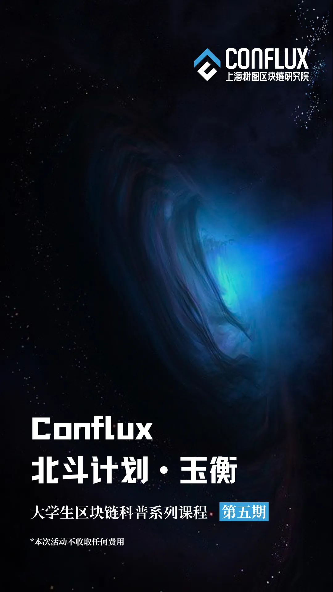
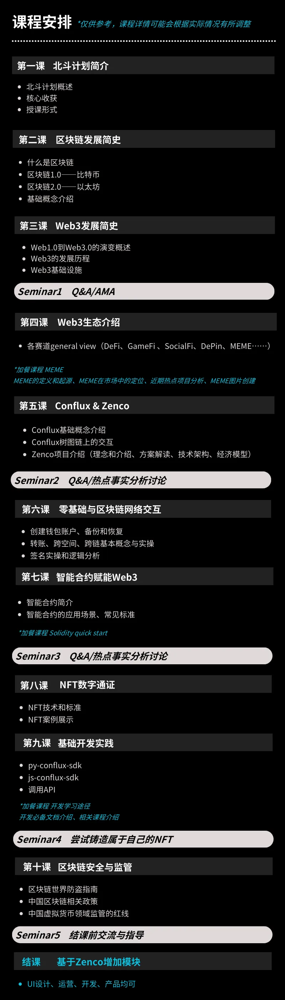

✦ 北斗计划是什么 ✦
北斗计划是由上海树图区块链研究院主办的中国区块链行业内首个系列大学生创业营活动，旨在面向国内外本科研究生开展多样化的科普课程和实践，本课程为优秀的在校生提供带领探索区块链技术的基本原理、应用领域和对社会的影响，以及Web3行业中的创新和机会。
北斗计划自2020年启动以来，已成功举办了北斗计划天枢、天璇、天玑和天权4期活动，参与者在北斗计划中学习区块链基础知识及 Solidity 智能合约开发、NFT开发等内容，并在 Conflux 树图链上开启自己的 dApp 项目。
本期北斗计划将围绕着科普以线上课程的形式开展，为期4-5周，共设10节主题课程，内容涵盖 Web3 基础知识、热点用例等系列课程。同时为有开发学习需求的同学额外设置了加餐课程，设有1对1问答的时间，为参与者提供与海内外顶尖高校师资及行业优秀从业者直接交流的机会。
本次北斗计划的导师阵容由国内优秀Web3项目及树图研究院的资深从业者组成，覆盖研究、开发、运营等多个不同岗位，为参赛者带来视角全面的中国Web3 知识，提供专业且深入的行业见解。参与者有机会系统地学习区块链知识，与业内专家共同探讨并实践最新的区块链技术，为未来的职业生涯奠定坚实基础。
✦ 参与北斗计划可以获得什么 ✦
从0到1学习Web3行业知识
与行业大咖直接交流的机会
独一无二的「北斗 · 玉衡」Conflux 树图链上结业证书
优秀选手可获得实习证明、CFX激励等
优秀项目有机会申请进行孵化
✦ 北斗计划课程大纲 ✦

✦ 报名方式 ✦
本期北斗计划以基础知识科普为主，不设门槛，欢迎所有高校在校生参与！对于有开发及技术学习需求的同学，我们额外设置了加餐课程，同学们可按兴趣选择是否要参加。无论你是否有相关背景知识，是否是计算机专业的同学，只要你对 Web3 和区块链技术感兴趣，欢迎加入本期的北斗计划！
近期将更新「北斗计划 · 玉衡」的详细课程安排和讲师团队，请持续关注～
往届北斗计划详情请至官网查看：https://edu.tree-graph.org.cn/